| 難度星級 | 類別定位 | 通過率區間 | 建議應對策略 |
|---|---|---|---|
| ★☆☆☆ | 穩賺基本盤 | P ≥ 75% | 秒殺送分題，細心圈題眼，確保 100% 答對率。 |
| ★★☆☆ | 進階核心題 | 60% ≤ P < 75% | 考查單一核心概念或圖表推論，善用公式與圖解法。 |
| ★★★☆ | 衝A勝負題 | 45% ≤ P < 60% | 跨單元整合或多步驟計算，5B 躍升 A 的關鍵戰場！ |
| ★★★★ | 高鑑別挑戰題 | P < 45% | 長篇閱讀素養題，先排除不可能選項，善用代入法反推。 |
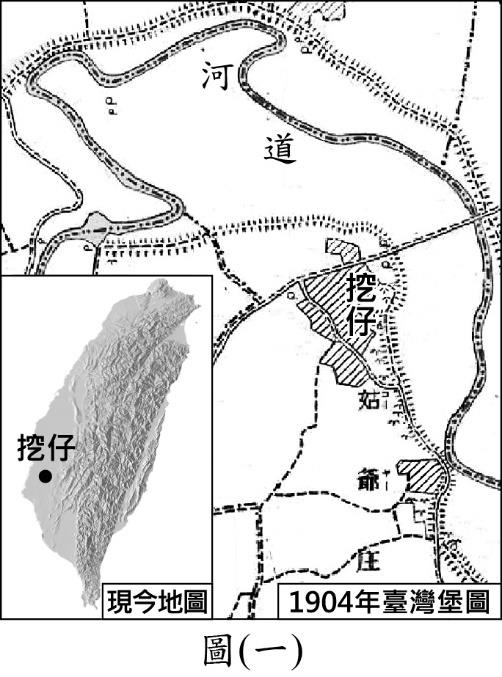
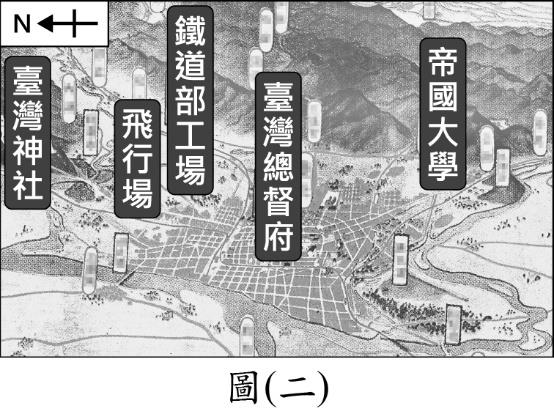
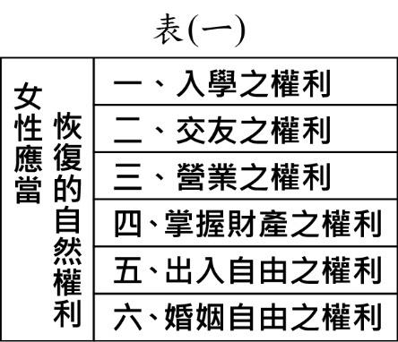
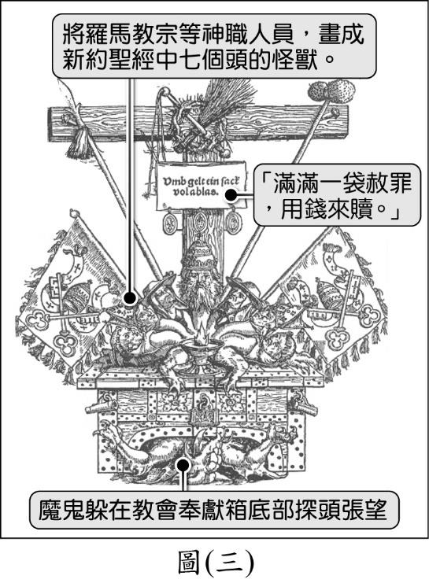
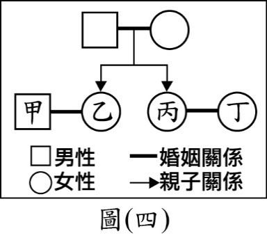
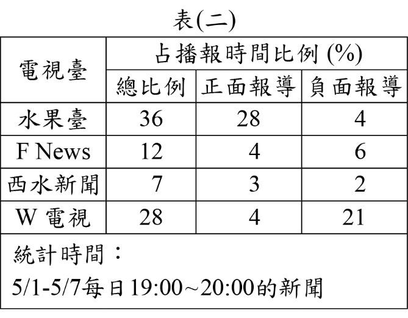
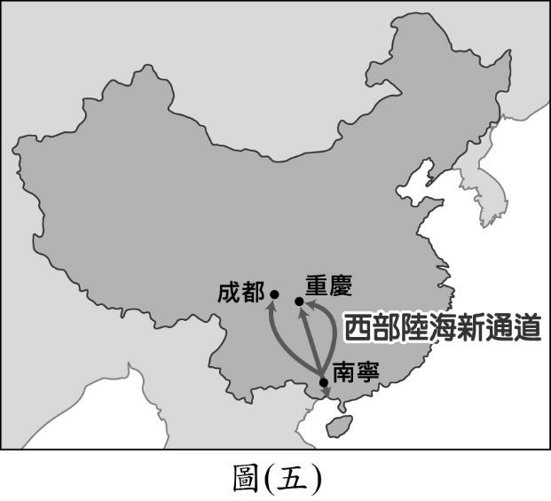
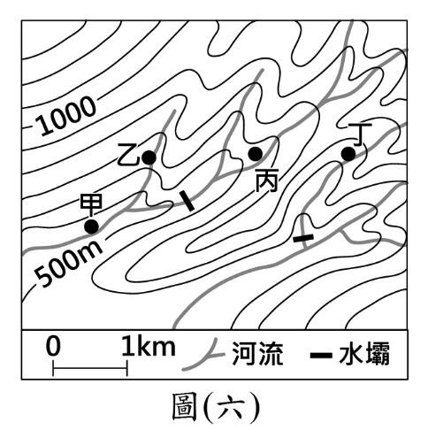
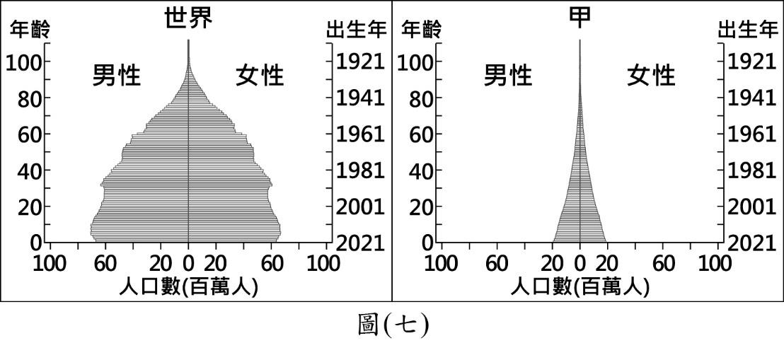
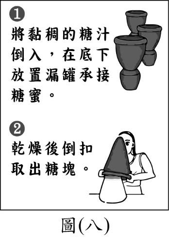
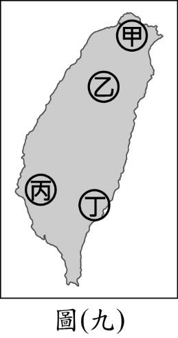
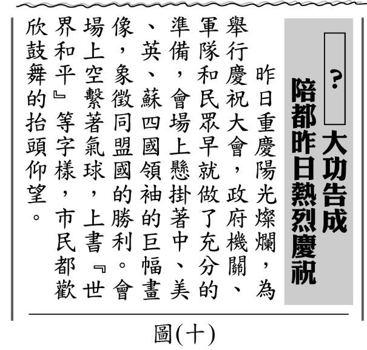
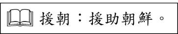
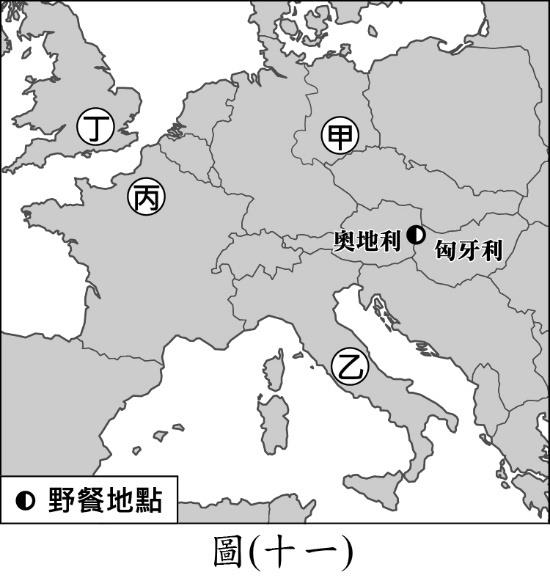
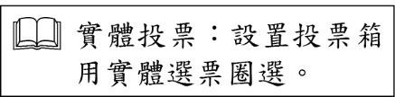
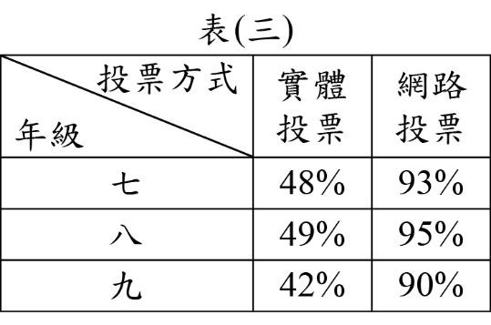
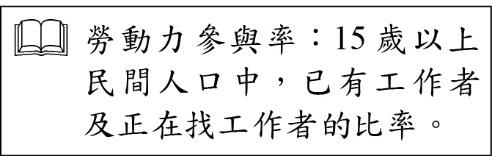
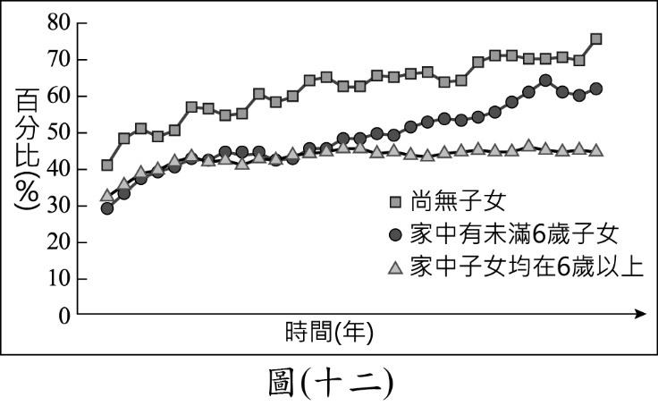
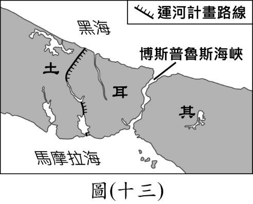
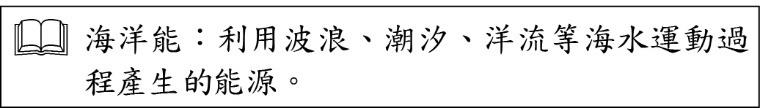
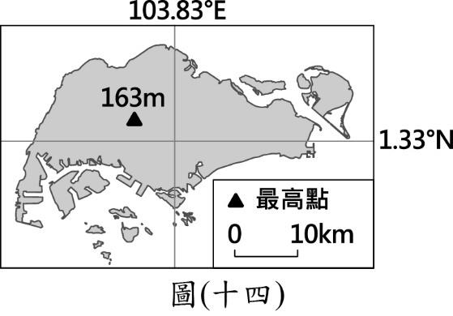
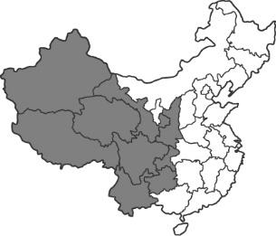
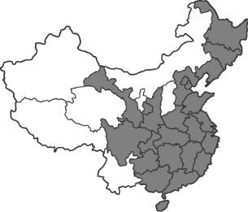
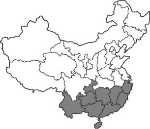
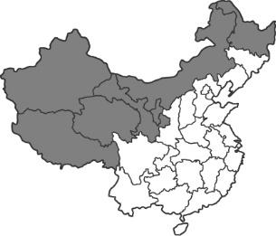
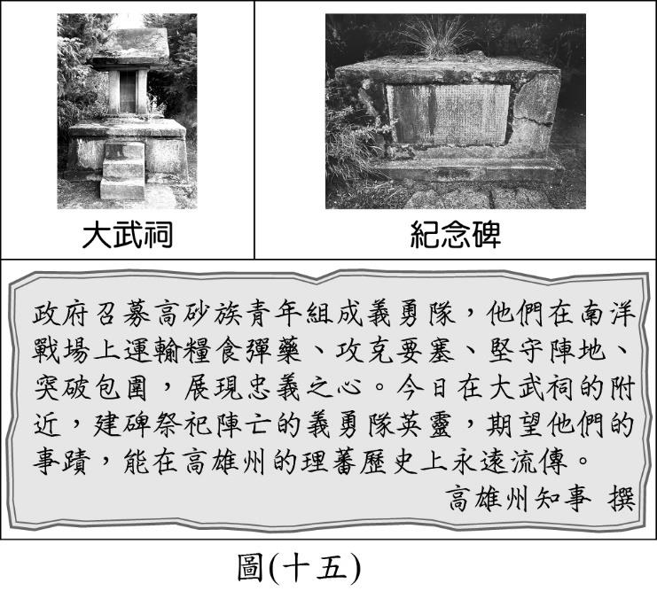
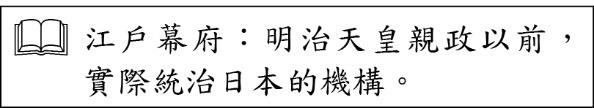
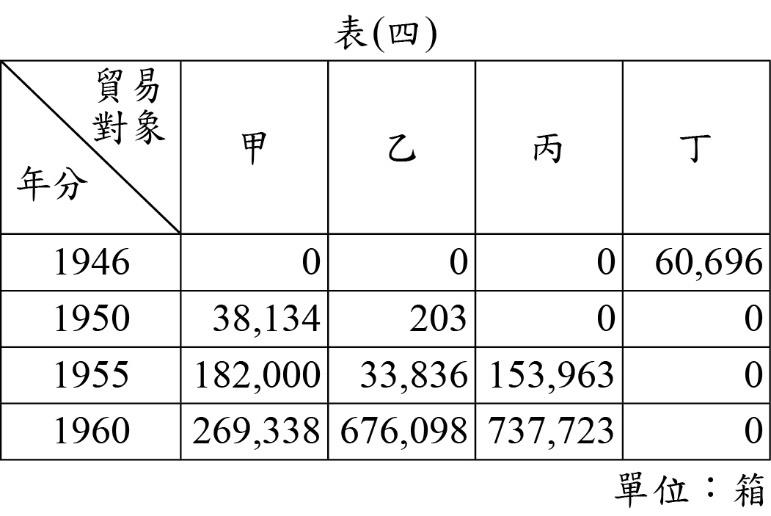
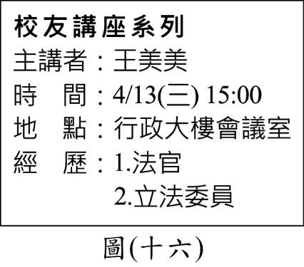
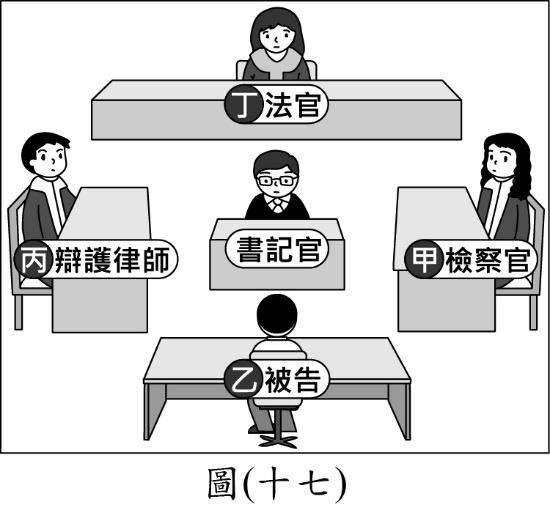
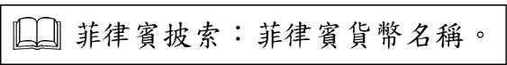
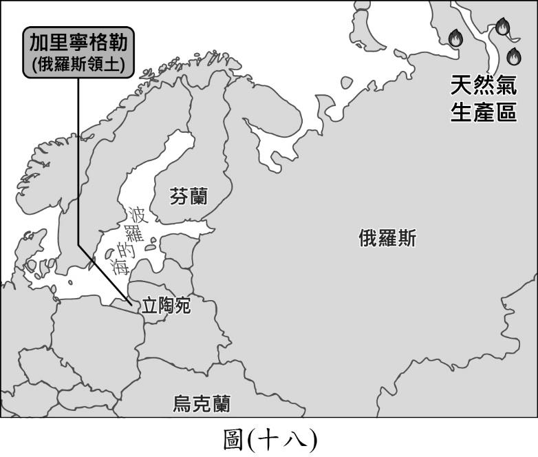
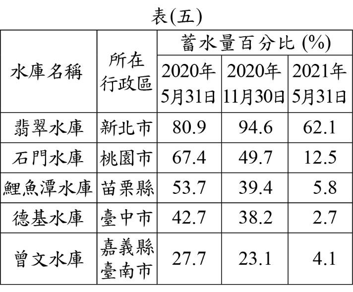
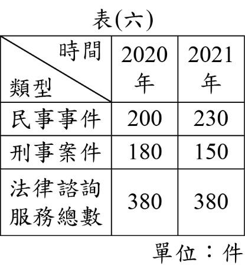
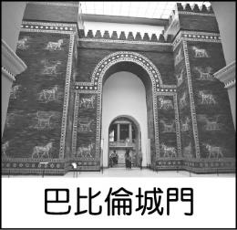
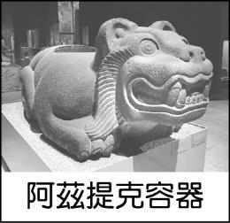
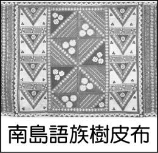
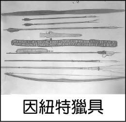
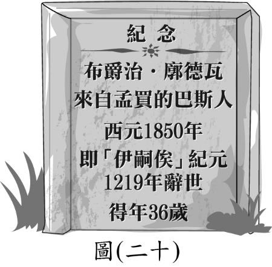
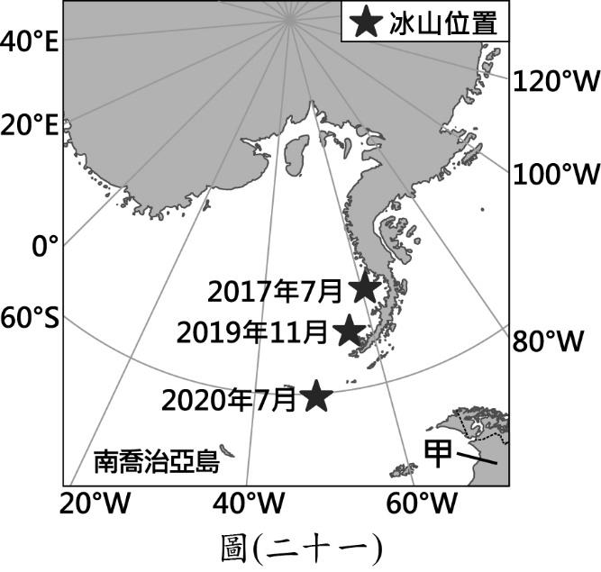